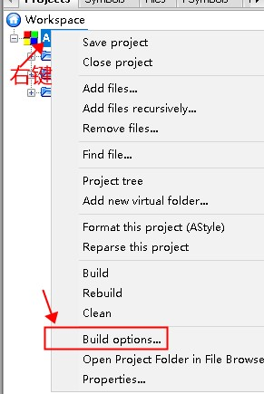
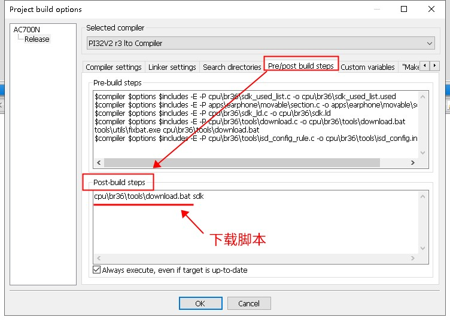
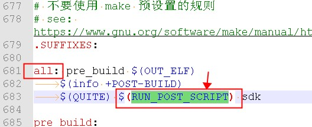
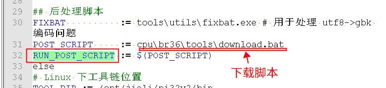

7.9. 如何确认当前工程使用的下载脚本 download.bat 是哪个
注意
原保存文件中缺少本页，本页已从 Internet Archive 存档（2026-08-24）恢复，内容可能与官网最新版本略有差异。
一些工程中，可能会有多个下载脚本 download.bat。当我们需要修改下载脚本的时候，会需要先确定哪个才是我们需要修改的下载脚本。
下载脚本，是在编译链接完成后，SDK 会调用的一个脚本。用于将我们编译链接出来的程序，下载到我们的样机中。
所以，这个问题的关键在于，如何找到编译链接完成之后，SDK 执行了哪些动作。
7.9.1. Code::Blocks 工程确认下载脚本的方式
对于 Code::Blocks 工程，编译链接完成之后执行的脚本，叫做 post-build step，这里面调用的就是下载脚本。


7.9.2. Makefile/VSCode 工程确认下载脚本的方式
对于 Makefile/VSCode 工程，我们需要先找到对应的 Makefile 文件。
在 all 目标下，有一个名为 $(RUN_POST_SCRIPT) 的调用，这个变量对应的就是下载脚本。


7.9.3. 注意事项
在一些 SDK 中，
download.bat是依据download.c生成的。且每次编译都会重新生成。如果是，请直接修改download.c，否则你的修改会被覆盖掉。在一些 SDK 中，
download.bat还会调用其它的download.bat脚本，请确认调用顺序。